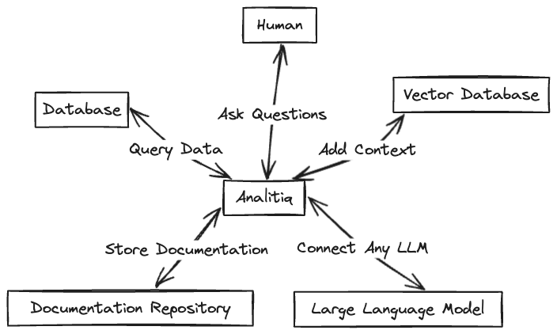

Analitiq
Analitiq is a Framework for managin your data using LLMs. Analitiq can be extended with your own services written in python. These custom services can address your unique tasks for managing your data, and they can function as part of the overall analytical engine of Analitiq.

Analitiq currently supports the following LLM models - ChatGPT - Mistral - Bedrock (AWS)
Analitiq currently integrates with the following vectorDBs - Weaviate - ChromaDB
What Analitiq needs to work
Since Analitiq is a framework to help data people manage data using LLMs, it requires at the least: 1. Access to LLM 2. Access to Database
As an extra bonus and to make things even smarter, it could also use: 3. Access to Vector Database with documentation.
Quick Start
- Clone the repo
- Set up
profiles.ymlin root directory. The fileprofiles.ymlhas all of your sensitive info, such as your API keys and DB credentials, so treat it with respect. Underusesyou can define which connections should be used for the current deployment. Ideally, you would have differentprofiles.ymlfor your prod and dev instances.test: connections: databases: - name: prod_dw type: postgres host: xxxxx user: xxxx password: 'xxxxx' port: 5432 dbname: sample_db dbschema: sample_schema threads: 4 keepalives_idle: 240 # default 240 seconds connect_timeout: 10 # default 10 seconds # search_path: public # optional, not recommended llms: - name: prod_llm type: openai api_key: xxxxxx temperature: 0.0 llm_model_name: gpt-3.5-turbo - name: dev_llm type: mistral api_key: xxxxxx - name: aws_llm type: bedrock credentials_profile_name: my_profile provider: anthropic llm_model_name: anthropic.claude-v2:1 temperature: 0.0 vector_dbs: - name: prod_vdb type: weaviate host: example.com api_key: xxxxx usage: databases: prod_dw llms: aws_llm vector_dbs: prod_vdb - Set up
project.ymlin root directory. The fileproject.ymlhas all of your project data, such as where the logs are stored. Most importantly,project.ymldefines where your custom Services are located so Analitiq can pick them up and use them to manage your data.name: 'analitiq' version: '0.1' profile: 'test' config_version: 2 config: general: chat_log_dir: "chats" # this is where we save our chat logs. sql_dir: "analysis" # this is where the ETL SQLs are being saved and managed services_dir: "custom_services" session_uuid_file: 'session_uuid.txt' # Where session identifier is being recorded. When session is reset, it is like beginning of a new chat topic and new log file will be created. target_path: "target" message_lookback: 5 # when LLM has no clue about users request, or users request relates to some item in chat history, how far back (in number of messages) should the LLM look in the current session chat log vectordb: doc_chunk_size: 2000 doc_chunk_overlap: 200 services: - name: ChartService description: "Use this service to generate script for APEX charts to visualize data" path: "custom_services/chart/chart.py" class: "Chart" method: "run" inputs: "dataframe as serialized json" outputs: "javascript that is used by the frontend to visualize data" - Run the example file
example.py(located in the root directory.)
Configuration files
There are 2 configuration files:
1. profiles.yaml - this file has all the secrets and connections needed to connect to LLMs, VectorDBs, Databases. Because you may have different production and development environments, profiles.yaml allows you to define multiple profiles (and multiple credentials).
2. project.yaml - this file has the parameters needed for your particular project, including what profile to use. You can define the profile in profile parameter.
Once you have your project deployed, you can specify which profile to be used by that particular project in project.yaml.
Let's look at some examples. Let's say when I run Analitiq locally, I want to use OpenAI. And when I upload it to production server, I want to use Bedrock.
I will set up my connections in profile.py
prod:
connections:
databases:
- name: prod_db
type: postgres
host: xxxx
user: xxxx
password: xxxx
port: 5432
dbname: postgres
dbschema: sample_data
threads: 4
keepalives_idle: 240 # default 240 seconds
connect_timeout: 10 # default 10 seconds
# search_path: public # optional, not recommended
llms:
- name: aws_llm
type: bedrock
credentials_profile_name: bedrock
region_name: eu-central-1
provider: anthropic
llm_model_name: anthropic.claude-v2
temperature: 0.0
aws_access_key_id: xxxxx
aws_secret_access_key: xxxxx
usage:
databases: prod_db
llms: aws_llm
local:
connections:
databases:
- name: local_db
type: postgres
host: xxxx
user: xxxx
password: xxxx
port: 5432
dbname: postgres
dbschema: sample_data
threads: 4
keepalives_idle: 240 # default 240 seconds
connect_timeout: 10 # default 10 seconds
# search_path: public # optional, not recommended
llms:
- name: openai_llm
type: openai
api_key: xxxx
temperature: 0.0
llm_model_name: gpt-3.5-turbo
usage:
databases: local_db
llms: openai_llm
on my local machine, I would have project.py file with the following configuration
project.py file with the following configuration
Now, I can move the project files between my prod environment and local and Analitiq will use different configuration to switch automagically.
UI
The app interface can be extended with a UI, such as streamlit app.